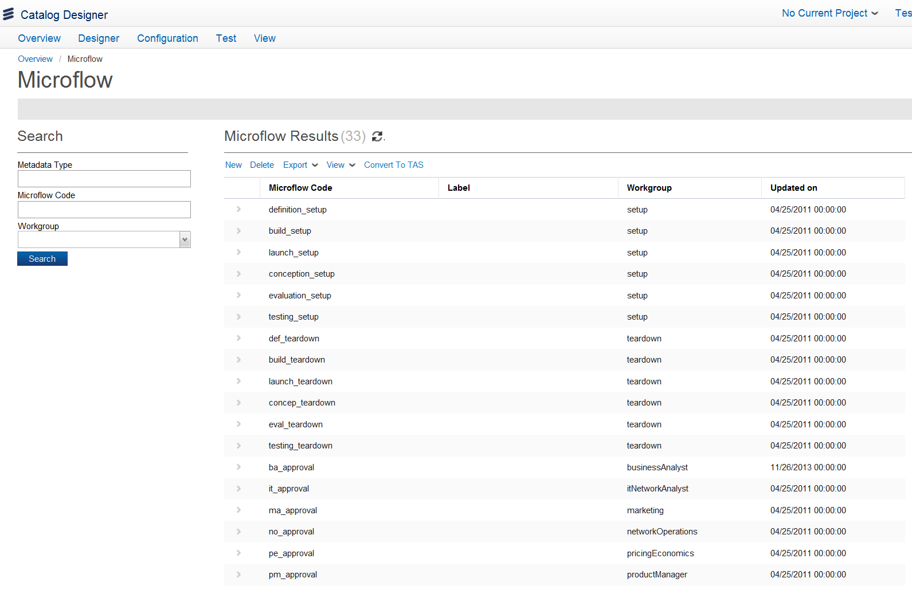
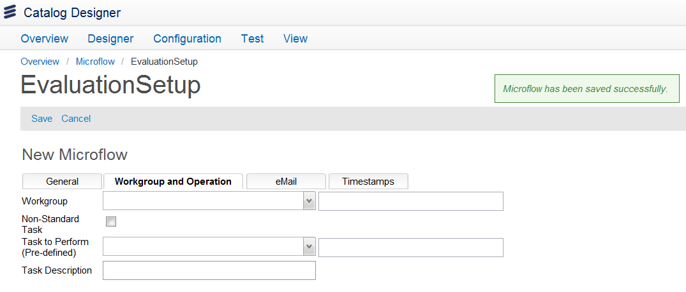

Configure Microflows
A microflow is a fully modeled workflow within the platform. You model microflows as processes, not as sub-flows. The primary difference is that they can instantiate themselves (without calling a parent), and may define their own parameters, rather than inheriting the calling parent’s parameters. You can access the Configure Microflow option using the Quick Start menu on the Ericsson Catalog Manager home page or by clicking Configuration > Configure PLD > Configure Microflow to allow you to Search, Add, Copy, and Delete microflow. You can also Convert a microflow to a Technical Action Specification (TAS) from this page.

Pre-defined Microflow Codes
The default, out-of-the-box Microflow codes that are pre-defined in the Configure Microflows page include the following:
| Pre-defined microflow code |
Workflow action description |
| definition_setup |
Sets the Definition stage for the Setup workgroup microflow. In the Definition stage, the product details and rollout plan are defined. |
| build_setup |
Sets the Build stage for the Setup workgroup microflow. During the build stage, the product is built in the system. |
| launch_setup |
Sets the Launch Product stage for the Setup workgroup microflow. Launch product is the last stage of the product lifecycle that is used to execute the rollout plan and launch the product. |
| conception_setup |
Sets the Conception stage for the Setup workgroup microflow. The Conception stage is the first step in the PLD process that outlines the business case for the change request. |
| evaluation_setup |
Sets the Evaluation stage for the Setup workgroup microflow. In the Evaluation stage, the Business Analyst and IT departments develop and confirm business requirements. |
| testing_setup |
Sets the Testing stage for the Setup workgroup microflow. In the testing stage, the product is released to testing. |
| def_teardown |
Sets the Definition stage for the Teardown workgroup microflow. In the Definition stage, the product details and rollout plan are defined. |
| build_teardown |
Sets the Build stage for the Teardown workgroup microflow. During the build stage, the product is built in the system. |
| launch_teardown |
Sets the Launch stage for the Teardown workgroup microflow. Launch product is the last stage of the product lifecycle that is used to execute the rollout plan and launch the product. |
| concep_teardown |
Sets the Conception stage for the Teardown workgroup microflow. The Conception stage is the first step in the PLD process that outlines the business case for the change request. |
| eval_teardown |
Sets the Evaluation stage for the Teardown workgroup microflow. In the Evaluation stage, the Business Analyst and IT departments develop and confirm business requirements. |
| testing_teardown |
Sets the Testing stage for the Teardown workgroup microflow. In the testing stage, the product is released to testing. |
| ba_approval |
Triggers the workflow to require approval for action from a Business Analyst participant. |
| it_approval |
Triggers the workflow to require approval for action from an IT Network Analyst participant |
| ma_approval |
Triggers the workflow to require approval for action from a Marketing participant. |
| no_approval |
Triggers the workflow to require approval for action from a Network Operations participant. |
| pe_approval |
Triggers the workflow to require approval for action from a Pricing Economics participant. |
| pm_approval |
Triggers the workflow to require approval for action from a Product Management participant. |
| pr_approval |
Triggers the workflow to require approval for action from a Product Modeler participant. |
| ra_approval |
Triggers the workflow to require approval for action from a Revenue Assurance participant. |
| main |
The main microflow code is added to all stages and has an internal use that is executed as the last microflow at the end of each stage. Specifying Main triggers the mainFlow_Complex workflow that is defined in the plmDev library files. This workflow takes the information that is created in the change request to initiate and process the tasks. |
| ba_action |
Triggers the workflow to assign the action to a Business Analyst participant. |
| it_action |
Triggers the workflow to assign the action to an IT Network Analyst participant. |
| ma_action |
Triggers the workflow to assign the action to a Marketing participant. |
| no_action |
Triggers the workflow to assign the action to a Network Operations participant. |
| pe_action |
Triggers the workflow to assign the action to a Pricing Economics participant. |
| pm_action |
Triggers the workflow to assign the action to a Product Manager participant. |
| pr_action |
Triggers the workflow to assign the action to a Product Modeler participant. |
| ra_action |
Triggers the workflow to assign the action to a Revenue Assurance participant. |
| resetFlags |
Triggers the workflow for the Intermediate microflow. |
| defaultProc |
The intermediate microflow that is used as the default microflow when a custom microflow is not chosen. |
For more information on the workflow stages, see the Product Lifecycle Developer Setup page in the Product Lifecycle Developer documentation.
To perform a search, enter your search criteria in the Metadata Type, Workflow Code, or Workgroup fields and then click the Search button.
To add a new microflow, do the following:
- From the Microflow search page, click the New button. The Microflow Details page appears.
- Enter the information for the Microflow Code and the Label field (for example, Evaluation Setup).
- From the drop-down list of the State field, select one stage (for example, Active).
- Enter the description of the microflow in the Description field.
- Select a process from the drop-down list of Metadata Name of Workflow field. You can select the checkbox next to this field to support any changes in the participant by this microflow.
- Click the Save button. A message confirms the microflow was saved and Workgroup and Operation, eMail, and Timestamps tabs appear.

- For the Workgroup and Operation Information tab, do the following:
- Select a participant from the drop-down list of the Workgroup field.
- Select the Non-Standard Task checkbox if you want to indicate that the task to be allocated to the user does not exist in the metadata and is supplied as part of the definition.
- Select a task from the list of Task to Perform (Pre-defined).
Note: The task list for this field depends on the option selected in the Stage and Workgroup field.
- You can send the task information to the participants through e-mail. Click the eMail Task tab and enter the information in the To, From (Reply To), Subject, and Message fields.
- Click the Save button. Click the Timestamps tab to view information in the Created by, Created on, Updated By, and Updated on fields that are generated by the system.
To copy a microflow, select the microflow that you want to copy from the search results and click the Copy button. The MicroFlow Details page appears with a copy of the selected microflow. You can make the changes and then click the Save button.
To delete a microflow, select the microflow that you want to delete from the search results list and click the Delete button. A confirmation dialog appears; click the Yes button to delete the selected microflow.
To export a list of microflows in the system, click the Export button and choose to export the microflow to XLS, to CSV, or to XML format.
From Microflow Details page, select a microflow from the result list and then click the Convert To TAS button to reference the selected microflow to the Technical Action Specification (TAS). The TAS consists of a microflow, along with any parameters, conditions, and compensating actions. The TAS is a reference to the microflow that is required to be invoked for each component that requires fulfillment. |